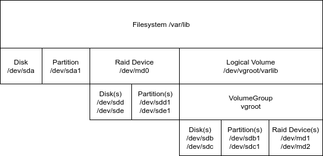

Configurable Filesystem layout for Machine Allocation
The current implementation uses a hard coded filesystem layout depending on the specified size and image. This is done in the metal-hammer. This worked well in the past because we had a small amount of sizes and images. But we reached a point where this is to restricted for all use cases we have to fulfill. It also forces us to modify the metal-hammer source code to support a new filesystem layout.
This proposal tries to address this issue by introducing a filesystem layout struct in the metal-api which is then configurable per machine allocation. The original behavior of automatic filesystem layout decision must still be present, because there must be no API change for existing API consumers. It should be a additional feature during machine allocation.
API and behavior
The API will get a new endpoint filesystemlayoutsto create/update/delete a set of available filesystemlayouts.
Constraints
In order to keep the actual machine allocation api compatible, there must be no difference while allocating a machine. To achieve this every filesystemlayout defines constraints which specifies for which combination of sizes and images this layout should be used by default. The specified constraints over all filesystemlayouts therefore must be collision free, to be more specific, there must be exactly one layout outcome for every possible combination of sizes and images.
The size constraint must be a list of the exact size ids, the image constraint must be a map of os to semver compatible version constraint. For example:
debian: ">= 10.20210101"ordebian: "< 10.20210101"
The general form of a image constraint is a map from os to versionconstraint where:
os must match the first part of the image without the version. versionconstraint must be the comparator, a space and the version, or simply * to match all versions of this os. The comparator must be one of: "=", "!=", ">", "<", ">=", "=>", "<=", "=<", "~", "~>", "^"
It must also be possible to have a filesystemlayout in development or for other special purposes, which can be specified during the machine allocation. To have such a layout, both constraints sizes and imagesmust be empty list.
Reinstall
The current reinstall implementation the metal-hammer detects during the installation on which disk the OS was installed and reports back to the metal-api the Report struct which has two properties primarydisk and ospartition. Both fields are not required anymore because the logic is now shifted to the filesystemlayout definition. If Disk.WipeOnReinstall is set to true, this disk will be wiped, default is false and is preserved.
Handling of s2-xlarge machines
These machines are a bit special compared to our c1-* machines because they have rotating hard disks for the mass storage purpose. The downside is that the on board SATA-DOM has the same naming as the HDDs and can not be specified as the first /dev/sda disk because all HDDs are also /dev/sd* disks. Therefore we had a special SATA-DOM detection algorithm inside metal-hammer which simply checks for the smallest /dev/sd disk and took this to install the OS.
This is not possible with the current approach, but we figured out that the SATA-DOM is always /dev/sde. So we can create a special filesystemlayout where the installations is made on this disk.
Possible Filesystemlayout hierarchies
It is only possible to create a filesystem on top of a block device. The creation of a block device can be done on multiple ways, depending on the requirements regarding performance, space and redundancy of the filesystem. It also depends on the disks available on the server.
The current approach implements the following hierarchies:

Implementation
// FilesystemLayout to be created on the given machine
type FilesystemLayout struct {
// ID unique layout identifier
ID string
// Description is human readable
Description string
// Filesystems to create on the server
Filesystems []Filesystem
// Disks to configure in the server with their partitions
Disks []Disk
// Raid if not empty, create raid arrays out of the individual disks, to place filesystems onto
Raid []Raid
// VolumeGroups to create
VolumeGroups []VolumeGroup
// LogicalVolumes to create on top of VolumeGroups
LogicalVolumes []LogicalVolume
// Constraints which must match to select this Layout
Constraints FilesystemLayoutConstraints
}
type FilesystemLayoutConstraints struct {
// Sizes defines the list of sizes this layout applies to
Sizes []string
// Images defines a map from os to versionconstraint
// the combination of os and versionconstraint per size must be conflict free over all filesystemlayouts
Images map[string]string
}
type RaidLevel string
type Format string
type GPTType string
// Filesystem defines a single filesystem to be mounted
type Filesystem struct {
// Path defines the mountpoint, if nil, it will not be mounted
Path *string
// Device where the filesystem is created on, must be the full device path seen by the OS
Device string
// Format is the type of filesystem should be created
Format Format
// Label is optional enhances readability
Label *string
// MountOptions which might be required
MountOptions []string
// CreateOptions during filesystem creation
CreateOptions []string
}
// Disk represents a single block device visible from the OS, required
type Disk struct {
// Device is the full device path
Device string
// Partitions to create on this device
Partitions []Partition
// WipeOnReinstall, if set to true the whole disk will be erased if reinstall happens
// during fresh install all disks are wiped
WipeOnReinstall bool
}
// Raid is optional, if given the devices must match.
// TODO inherit GPTType from underlay device ?
type Raid struct {
// ArrayName of the raid device, most often this will be /dev/md0 and so forth
ArrayName string
// Devices the devices to form a raid device
Devices []Device
// Level the raidlevel to use, can be one of 0,1,5,10
// TODO what should be support
Level RaidLevel
// CreateOptions required during raid creation, example: --metadata=1.0 for uefi boot partition
CreateOptions []string
// Spares defaults to 0
Spares int
}
// VolumeGroup is optional, if given the devices must match.
type VolumeGroup struct {
// Name of the volumegroup without the /dev prefix
Name string
// Devices the devices to form a volumegroup device
Devices []string
// Tags to attach to the volumegroup
Tags []string
}
// LogicalVolume is a block devices created with lvm on top of a volumegroup
type LogicalVolume struct {
// Name the name of the logical volume, without /dev prefix, will be accessible at /dev/vgname/lvname
Name string
// VolumeGroup the name of the volumegroup
VolumeGroup string
// Size of this LV in mebibytes (MiB)
Size uint64
// LVMType can be either striped or raid1
LVMType LVMType
}
// Partition is a single partition on a device, only GPT partition types are supported
type Partition struct {
// Number of this partition, will be added to the device once partitioned
Number int
// Label to enhance readability
Label *string
// Size given in MebiBytes (MiB)
// if "0" is given the rest of the device will be used, this requires Number to be the highest in this partition
Size string
// GPTType defines the GPT partition type
GPTType *GPTType
}
const (
// VFAT is used for the UEFI boot partition
VFAT = Format("vfat")
// EXT3 is usually only used for /boot
EXT3 = Format("ext3")
// EXT4 is the default fs
EXT4 = Format("ext4")
// SWAP is for the swap partition
SWAP = Format("swap")
// None
NONE = Format("none")
// GPTBoot EFI Boot Partition
GPTBoot = GPTType("ef00")
// GPTLinux Linux Partition
GPTLinux = GPTType("8300")
// GPTLinuxRaid Linux Raid Partition
GPTLinuxRaid = GPTType("fd00")
// GPTLinux Linux Partition
GPTLinuxLVM = GPTType("8e00")
// LVMTypeLinear append across all physical volumes
LVMTypeLinear = LVMType("linear")
// LVMTypeStriped stripe across all physical volumes
LVMTypeStriped = LVMType("striped")
// LVMTypeStripe mirror with raid across all physical volumes
LVMTypeRaid1 = LVMType("raid1")
)Example metalctl outputs:
$ metalctl filesystemlayouts ls
ID DESCRIPTION SIZES IMAGES
default default fs layout c1-large-x86, c1-xlarge-x86 debian >=10, ubuntu >=20.04, centos >=7
ceph fs layout for ceph s2-large-x86, s2-xlarge-x86 debian >=10, ubuntu >=20.04
firewall firewall fs layout c1-large-x86, c1-xlarge-x86 firewall >=2
storage storage fs layout s3-large-x86 centos >=7
s3 storage fs layout s2-xlarge-x86 debian >=10, ubuntu >=20.04, >=firewall-2
default-devel devel fs layout The default layout reflects what is actually implemented in metal-hammer to guarantee backward compatibility.
---
id: default
constraints:
sizes:
- c1-large-x86
- c1-xlarge-x86
images:
debian: ">=10"
ubuntu: ">=20.04"
centos: ">=7"
filesystems:
- path: "/boot/efi"
device: "/dev/sda1"
format: "vfat"
options: "-F 32"
label: "efi" # required to be compatible with old images
- path: "/"
device: "/dev/sda2"
format: "ext4"
label: "root" # required to be compatible with old images
- path: "/var/lib"
device: "/dev/sda3"
format: "ext4"
label: "varlib" # required to be compatible with old images
- path: "/tmp"
device: "tmpfs"
format: "tmpfs"
mountoptions: ["defaults","noatime","nosuid","nodev","noexec","mode=1777","size=512M"]
disks:
- device: "/dev/sda"
wipe: true
partitions:
- number: 1
label: "efi"
size: 500
type: GPTBoot
- number: 2
label: "root"
size: 5000
type: GPTLinux
- number: 3
label: "varlib"
size: 0 # to end of partition
type: GPTLinuxThe firewall layout reuses the built in nvme disk to store the logs, which is way faster and larger than what the sata-dom ssd provides.
---
id: firewall
constraints:
sizes:
- c1-large-x86
- c1-xlarge-x86
images:
firewall: ">=2"
filesystems:
- path: "/boot/efi"
device: "/dev/sda1"
format: "vfat"
options: "-F 32"
- path: "/"
device: "/dev/sda2"
format: "ext4"
- path: "/var"
device: "/dev/nvme0n1p1"
format: "ext4"
disks:
- device: "/dev/sda"
wipe: true
partitions:
- number: 1
label: "efi"
size: 500
type: GPTBoot
- number: 2
label: "root"
size: 5000
type: GPTLinux
- device: "/dev/nvme0n1"
wipe: true
partitions:
- number: 1
label: "var"
size: 0
type: GPTLinuxThe storage layout will be used for the storage servers, which must have mirrored boot disks.
---
id: storage
constraints:
sizes:
- s3-large-x86
images:
centos: ">=7"
filesystems:
- path: "/boot/efi"
device: "/dev/md1"
format: "vfat"
options: "-F32"
- path: "/"
device: "/dev/md2"
format: "ext4"
disks:
- device: "/dev/sda"
wipe: true
partitions:
- number: 1
label: "efi"
size: 500
type: GPTLinuxRaid
- number: 2
label: "root"
size: 5000
type: GPTLinuxRaid
- device: "/dev/sdb"
wipe: true
partitions:
- number: 1
label: "efi"
size: 500
type: GPTLinuxRaid
- number: 2
label: "root"
size: 5000
type: GPTLinuxRaid
raid:
- name: "/dev/md1"
level: 1
devices:
- "/dev/sda1"
- "/dev/sdb1"
options: "--metadata=1.0"
- name: "/dev/md2"
level: 1
devices:
- "/dev/sda2"
- "/dev/sdb2"
options: "--metadata=1.0"The s3-storage layout matches the special situation on the s2-xlarge machines.
---
id: s3-storage
constraints:
sizes:
- c1-large-x86
- s2-xlarge-x86
images:
debian: ">=10"
ubuntu: ">=20.04"
centos: ">=7"
filesystems:
- path: "/boot/efi"
device: "/dev/sde1"
format: "vfat"
options: "-F 32"
- path: "/"
device: "/dev/sde2"
format: "ext4"
- path: "/var/lib"
device: "/dev/sde3"
format: "ext4"
disks:
- device: "/dev/sde"
wipe: true
partitions:
- number: 1
label: "efi"
size: 500
type: GPTBoot
- number: 2
label: "root"
size: 5000
type: GPTLinux
- number: 3
label: "varlib"
size: 0 # to end of partition
type: GPTLinuxA sample lvm layout which puts /var/lib as stripe on the nvme device
---
id: lvm
description: "lvm layout"
constraints:
size:
- s2-xlarge-x86
images:
debian: ">=10"
ubuntu: ">=20.04"
centos: ">=7"
filesystems:
- path: "/boot/efi"
device: "/dev/sda1"
format: "vfat"
createoptions:
- "-F 32"
label: "efi"
- path: "/"
device: "/dev/sda2"
format: "ext4"
label: "root"
- path: "/var/lib"
device: "/dev/vg00/varlib"
format: "ext4"
label: "varlib"
- path: "/tmp"
device: "tmpfs"
format: "tmpfs"
mountoptions: ["defaults","noatime","nosuid","nodev","noexec","mode=1777","size=512M"]
volumegroups:
- name: "vg00"
devices:
- "/dev/nvmne0n1"
- "/dev/nvmne0n2"
logicalvolumes:
- name: "varlib"
volumegroup: "vg00"
size: 200
lvmtype: "striped"
disks:
- device: "/dev/sda"
wipeonreinstall: true
partitions:
- number: 1
label: "efi"
size: 500
gpttype: "ef00"
- number: 2
label: "root"
size: 5000
gpttype: "8300"
- device: "/dev/nvmne0n1"
wipeonreinstall: false
- device: "/dev/nvmne0n2"
wipeonreinstall: falseComponents which requires modifications
- metal-hammer:
- change implementation from build in hard coded logic
- move logic to create fstab from install.sh to metal-hammer
- metal-api:
- new endpoint
filesystemlayouts - add optional spec of
filesystemlayoutduringallocationwith validation if givenfilesystemlayoutis possible on given size. - add
allocation.filesystemlayoutin the response, based on either the specifiedfilesystemlayoutor the calculated one. - implement
filesystemlayoutsvalidation for:- matching to disks in the size
- no overlapping with the sizes/imagefilter specified in
filesystemlayouts - all devices specified exists from top to bottom (fs -> disks -> device || fs -> raid -> devices)
- new endpoint
- metalctl:
- implement
filesystemlayouts
- implement
- metal-go:
- adopt api changes
- metal-images:
- install mdadm for raid support